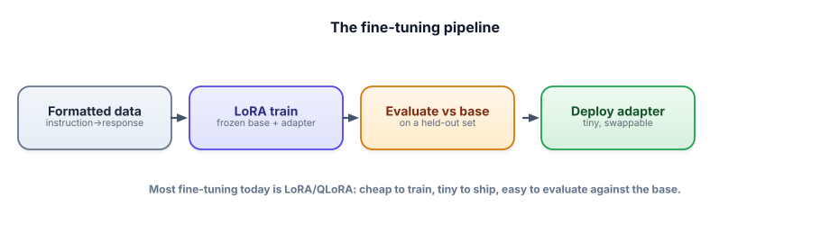

Interview check: Fine-tuning & Adapters
Fine-tuning questions test judgment more than mechanics: do you know when to fine-tune, and can you do it cheaply and prove it worked? Interviewers love this topic because it separates people who reach for fine-tuning reflexively from those who reach for it wisely.
Answer aloud first. The throughline: RAG for knowledge, prompting for instructions, fine-tuning for behavior; fine-tune cheaply with LoRA/QLoRA on great data; and always evaluate against the base.

The questions teams ask
“When do you fine-tune instead of prompting or RAG?”
▸ Strong answer
RAG for knowledge (large, private, changing facts — and citations); prompting for instructions and one-offs; fine-tuning for durable behavior — a consistent format/style/tone, reliable performance on a narrow repeated task, or a smaller/cheaper model that matches a big one. Try them in that order, since prompting and RAG are instant and reversible. Fine-tuning earns its cost when the behavior is stable, high-volume, and measurable — and it often combines with RAG (behavior from tuning, facts from retrieval).
“What does training actually do, in plain terms?”
▸ Strong answer
It runs a loop: the model predicts, a loss measures how wrong it was, and gradient descent nudges the weights to be less wrong — repeated over many examples (backprop computes the gradients efficiently). Pre-training does this on the whole web; fine-tuning does a little more on your data, starting from a capable model — which is why it needs far less data and compute. The key risk is overfitting: watch held-out (validation) loss, not just training loss.
“What makes a good fine-tuning dataset?”
▸ Strong answer
Consistent format that matches inference, high-quality outputs (the model imitates them), representative and diverse coverage including edge cases, deduplicated and clean, and no leakage between train and validation. Quality and consistency beat quantity — a few hundred excellent pairs often beat thousands of messy ones. The dataset is the product of a fine-tune; most of the work is here.
“Explain LoRA and QLoRA and why they matter.”
▸ Strong answer
LoRA freezes the base model and trains small low-rank adapter matrices — ~0.1–1% of the parameters — so training is cheap and the result is a tiny, swappable adapter file. QLoRA adds 4-bit quantization of the frozen base, cutting memory ~4× so you can fine-tune a big model on a single (even free) GPU. Together they made fine-tuning accessible and enable “one base, many adapters” serving — cheap to train, tiny to ship, easy to host at scale.
“Difference between SFT and RLHF/DPO?”
▸ Strong answer
SFT (supervised fine-tuning) trains on instruction→response pairs — the model imitates good demonstrations; it’s the workhorse and usually enough for “behave like X.” Preference tuning (RLHF or the simpler DPO) trains on comparisons between responses to align subtle trade-offs (helpfulness, tone, safety) that are easier to rank than to demonstrate. Ladder: SFT first; preference tuning only when you need to optimize preferences SFT can’t easily capture and can collect comparisons.
“How do you know a fine-tune worked?”
▸ Strong answer
Compare the fine-tuned model against the base on a held-out set, measuring the target task (should rise) and general ability (should not fall — to catch catastrophic forgetting). Watch train-vs-held-out for overfitting, run a regression suite of fixed prompts, and ideally A/B test in production. “Feels better” isn’t evidence; a held-out comparison against the base is. If general ability dropped, train less aggressively or mix in diverse data and re-measure.
“A stakeholder insists we ‘fine-tune the model on our knowledge base.’ What do you say?”
▸ Strong answer
I’d gently redirect: for knowledge that changes, RAG is the right tool — retrieve current docs at query time, with citations, and update by re-indexing rather than retraining. Fine-tuning bakes behavior into weights and is poorly suited to fresh, changing facts (constant retraining, no citations, fuzzier recall). If they also want a consistent format/tone, we can fine-tune for that behavior and use RAG for the facts. So: RAG for the docs, fine-tuning only for behavior — often both together.
Rapid-fire self-check
The most reliable signal that you’re overfitting during fine-tuning is…
Which is the best reason to choose QLoRA over full fine-tuning for a startup?
- Prompt vs RAG vs fine-tune, and the “try in that order” rule.
- What training does (predict → loss → gradient step) and overfitting.
- Data quality, format-matches-inference, and leakage.
- LoRA and QLoRA — what each contributes, and adapter serving.
- SFT vs RLHF/DPO, and the chat-template gotcha.
- Evaluating vs the base on held-out data; catastrophic forgetting.
You can now choose, run, and prove a fine-tune. Notice how every track has ended at the same place — measure it. Next, we make that a first-class skill: Track 6, Evals & Observability.